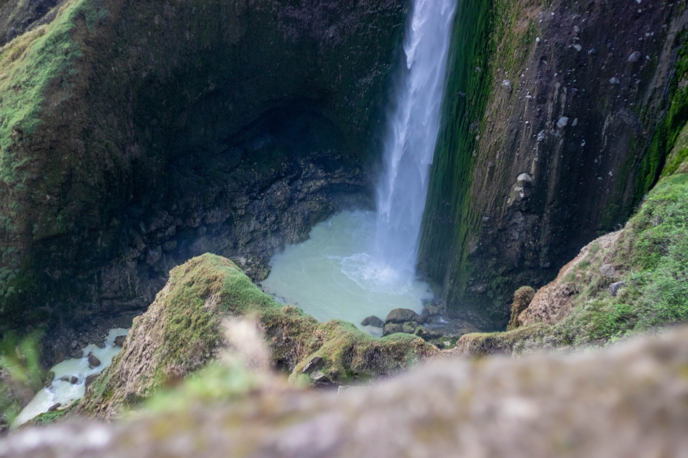
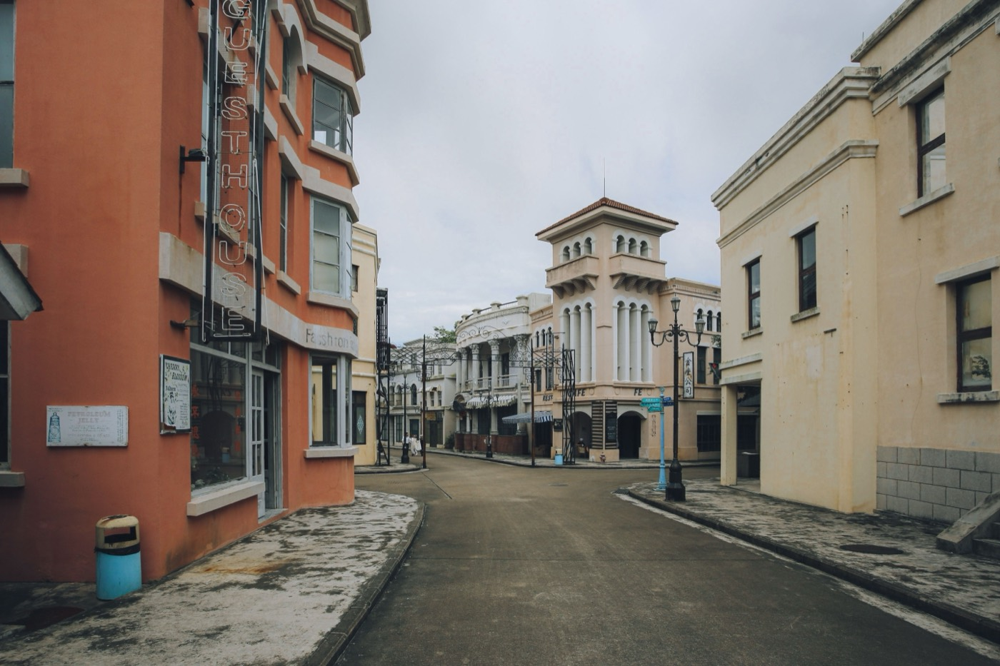

Moving to Dominica in 2026
The cheapest cost of living in the Caribbean, a $200,000 second passport that is no longer quite the deal it was, Level 1 safety, and rainforest instead of resorts.

Quick take
- Cost of livingThe cheapest in the Caribbean. One person lives well on $1,500 to $2,000 a month.
- The passportFrom $200,000, but roughly $230,000 all in once fees land. New strings attached in 2026.
- SafetyState Department Level 1. One of the calmest islands in the region.
- HealthcareBasic. Budget for evacuation insurance, not optional.
- Getting thereAwkward until the new international airport opens, targeted for late 2027.
- Best forPeople who want rainforest, low costs, and quiet. Not people who want beach clubs.
First, the thing everyone gets wrong: Dominica is not the Dominican Republic. Different country, different language, different everything. Dominica is a small English-speaking volcanic island in the eastern Caribbean, and it is the one place in the region that skipped the resort era almost entirely. What you get instead is rainforest, 365 rivers, boiling lakes, and the lowest cost of living anywhere in the Caribbean. What you give up is convenience, and you give up more of it than the brochures let on.
The $200,000 passport, and what changed in 2026
Dominica has run a citizenship-by-investment program since 1993, making it one of the oldest in the world. For years the pitch was simple: donate $200,000, never set foot on the island, collect a passport in six to nine months. That pitch is out of date, and if you are reading a guide that still repeats it, the guide has not been updated since 2024.
Here is what is still true. The Economic Diversification Fund route starts at $200,000 for a single applicant, or $250,000 for a family of four. The real estate route also starts at $200,000 in an approved project, held for three years (five if your buyer is another CBI applicant). Approval still takes roughly six to nine months, and Dominica still charges no wealth, foreign income, or capital gains tax on non-resident citizens.
What is new is the price of admission beyond the headline number. Due diligence runs $7,500 for the main applicant and $4,000 for each dependent over 16. Every applicant aged 16 and up now sits a mandatory interview at $1,000 a head, usually by video. Add processing, naturalisation, and passport fees and a single applicant is looking at closer to $230,000. A family of four lands nearer $380,000.
The sticker price is not the price
Approximate 2026 figures for one adult applicant via the Economic Diversification Fund. Agent commissions sit on top of this and vary widely.
The part that changed everything
On 16 December 2025, the US expanded its entry restrictions to cover Dominica, effective 1 January 2026. Dominican passport holders can no longer obtain US immigrant visas, F student visas, or J exchange visas. Tourist and business visas were cut from ten years and unlimited entries down to three months, single entry. The stated reason was that Dominica's CBI program had no residency requirement, so a restricted national could buy their way around a US travel ban.
The UK also now requires Dominican citizens to hold a full visitor visa, while Antigua, Grenada, and St Kitts holders still travel on a simple electronic authorisation. If your reason for buying this passport was mobility, price it against that.
US access on a Dominica passport, before and after 1 January 2026
Tourist and business (B-1/B-2) visas. Holders with visas issued before 1 January 2026 keep the old terms.
Dominica is negotiating to get the restrictions lifted and has committed to reforms, including a 30-day minimum residency requirement and a rule that new citizens collect and renew their passports on the island. Both changes kill the fully remote pitch. Neither has fully landed yet. If you are considering this route, the honest advice is to assume the rules will keep moving and to work with a licensed agent who is tracking them weekly.
One more signal worth reading. In July 2024 Dominica issued a Deprivation of Citizenship order stripping citizenship from 68 people who had obtained it through the program. That is a government trying to prove it can police its own scheme. Whether you find that reassuring or alarming probably depends on how you got in.
What it costs to live here
This is Dominica's genuine superpower, and the numbers hold up. A single person lives comfortably on $1,500 to $2,000 a month. A centrally located one-bedroom starts around $280. A three-bedroom house can be bought outright for under $100,000, which in most of the Caribbean does not buy a parking space. Full-time domestic help runs $400 to $600 a month.
The cost structure has a clear shape to it: anything grown, caught, or built on the island is cheap, and anything that arrived on a container ship is not. Local produce, fish, rum, and rent are inexpensive. Imported electronics, cars, cheese, wine, and building materials all carry a shipping and duty premium that can run 30% or more above US prices. Budget accordingly, and buy your laptop before you come.
Living here without buying citizenship
You do not need a $200,000 passport to move to Dominica, and most people who live there did not buy one. US citizens can stay up to six months visa free. There is a temporary residency route for people with independent means who do not intend to work, which suits retirees and remote workers, and a work permit tied to a job offer of six months or more.
For a lot of readers this is the better answer. Rent for a year, see whether the quiet suits you, and keep the $200,000. Dominica is a place people either fall hard for or leave within eighteen months, and there is no way to know which one you are from a browser tab.
Is Dominica safe?
Yes, by regional standards it is one of the safest places you can go. The US State Department rates it Level 1, its lowest advisory tier. Violent crime is rare, communities are small enough that everyone knows everyone, and Portsmouth in particular has a reputation for being calm. Petty theft exists, as it does everywhere.
The risks that should shape your planning are not criminal. They are power outages, unlit mountain roads with real drops beside them, limited emergency response outside Roseau, and hurricanes.
Healthcare, and the question you have to answer first
Dominica-China Friendship Hospital in Roseau handles general and emergency care competently. What the island does not have is depth: no advanced cardiac care, limited oncology, few specialists, and imaging equipment that is thin on the ground. Anything serious means evacuation to Martinique, Barbados, or the US.
So the question is not whether you like the hospital. It is whether you can afford the flight. Comprehensive international insurance with medical evacuation cover is the single non-negotiable line item of living here. An unplanned air ambulance out of Dominica can cost more than a year of rent. If you are over 60 or managing a chronic condition, price this before you price anything else.
Where people land

Roseau is the capital and has the deepest rental market, along with most of the island's services. Portsmouth in the north is smaller, close-knit, and popular with people who want quiet and a lower bill. The coastal villages of Marigot and Soufrière draw a scattering of foreigners who want to be near water and away from town.
Roughly 20% of the island is protected parkland, which is why the interior stays wild and why buildable coastal land is scarcer than the map suggests. Access is the current pain point: most routes in require a connection through Antigua, Barbados, or San Juan. The new international airport at Wesley, funded by CBI revenue and carrying a 3,000-metre runway that can take wide-body aircraft, is targeted for phased opening in the last quarter of 2027. The government is in talks with British Airways, Virgin Atlantic, and Condor about direct long-haul service. If that lands, Dominica in 2028 is a meaningfully different proposition from Dominica today.
What Hurricane Maria means if you buy or build
In September 2017, Hurricane Maria sat over Dominica as a Category 5 for more than three hours. It damaged 98% of the roofs on the island and destroyed or damaged 85% of homes, leaving 50,000 of 73,000 people without shelter. Total damage and losses came to about US$1.3 billion, which was 226% of the country's annual GDP. One storm cost Dominica more than two years of everything it produces.
That event reset how the island builds. Dominica declared an ambition to become the world's first climate-resilient nation, revised its building codes, and ran a World Bank-backed housing recovery program using six standardised hurricane-resilient house designs. Building to those standards costs roughly 25% more than building the old way.
The builder's read
We build homes in the tropics, so here is the practical version. That 25% premium is the cheapest insurance on the island. Older housing stock priced attractively is often older housing stock that has already failed once, and roof structure is where the money hides. If you are buying, pay for a structural inspection focused on roof-to-wall connections and check what the property did in 2017. If you are building, build to the revised code and do not let anyone talk you into the savings.
Also worth knowing: Dominica's terrain is steep, and settlement is squeezed onto narrow coastal strips. Most of the island is exposed to either landslide or flood risk, which is why a single storm can hit the entire country at once. Slope and drainage matter more here than view.
So is Dominica right for you?
- Strong fit if: you want the lowest costs in the Caribbean, you like rainforest more than beach bars, you are healthy enough that the medical situation is a manageable risk, and you are moving for the life rather than the passport.
- Think hard if: you need advanced local healthcare, you fly often and cannot absorb an extra connection until 2027, or your plan depends on easy US and UK travel on a Dominican passport.
- Rethink entirely if: the passport was the whole point. Grenada and St Kitts kept their US visa terms and their UK electronic authorisation, and both cost more for a reason.
Dominica rewards a particular kind of person: someone who wanted less to begin with. If that is you, nowhere in the Caribbean gives you more of it for less money. If it is not, the island will not pretend otherwise, and you will know within a season.
A $100,000 house is only cheap if the roof survives
Dominica lost 98% of its roofs in one afternoon in 2017, and the rebuild taught the island exactly what tropical construction has to withstand. SORA designs and builds homes across the tropics, with our deepest roots in Panama and Costa Rica, where residency is straightforward and building costs a fraction of the coastal Caribbean. If the move is really about a place of your own in the sun, it is worth seeing what a fixed-price build looks like before you commit to any one island.
Frequently asked questions
How much does it cost to live in Dominica?
Dominica is the cheapest place to live in the Caribbean. One person lives comfortably on $1,500 to $2,000 a month. A central one-bedroom starts near $280, and a three-bedroom house can be bought for under $100,000. Anything imported costs noticeably more than it does in the US.
What does Dominica citizenship by investment really cost in 2026?
The headline is $200,000 into the Economic Diversification Fund, or $250,000 for a family of four. Once due diligence ($7,500), the mandatory $1,000 interview, processing, and passport fees are added, a single applicant pays closer to $230,000. A family of four lands nearer $380,000, before agent commissions.
Can I still travel to the US on a Dominica passport?
Only on a much shorter leash. Since 1 January 2026 the US bars Dominican passport holders from immigrant, F student, and J exchange visas, and caps tourist and business visas at three months and a single entry, down from ten years with unlimited entries. Visas issued before that date remain valid. The UK now requires a full visitor visa too.
Is Dominica safe?
Yes. The US State Department rates it Level 1, its lowest advisory tier. Violent crime is rare and communities are small and close-knit, with Portsmouth often cited as the calmest. Plan instead around power outages, unlit mountain roads, thin emergency response outside Roseau, and hurricane exposure.
Is Dominica the same as the Dominican Republic?
No, they are separate countries. Dominica is a small, English-speaking, mountainous island in the eastern Caribbean. The Dominican Republic is a much larger Spanish-speaking country sharing Hispaniola with Haiti. This guide covers Dominica; see our separate Dominican Republic guide.
When does Dominica's new international airport open?
The new airport at Wesley is targeted for phased opening in the last quarter of 2027. Its 3,000-metre runway can take wide-body aircraft, and the government is in talks with British Airways, Virgin Atlantic, and Condor about direct long-haul flights. Until then, most routes in require a connection.
Sources & verification
Figures in this guide were checked against primary and authoritative sources on 27 July 2026. Immigration, tax, and cost figures change, so always confirm the current rules with the official body or a licensed professional before acting.
- Dominica Citizenship by Investment Unit (CBIU) · official CBI program authority and fee schedule
- US State Department · travel advisory level and visa reciprocity schedule
- World Bank · Dominica's climate-resilience program and revised building codes
- Post-Disaster Needs Assessment, Hurricane Maria · damage at 226% of GDP; 98% of roofs damaged
- Office of the Prime Minister, Dominica · international airport progress and 2027 target